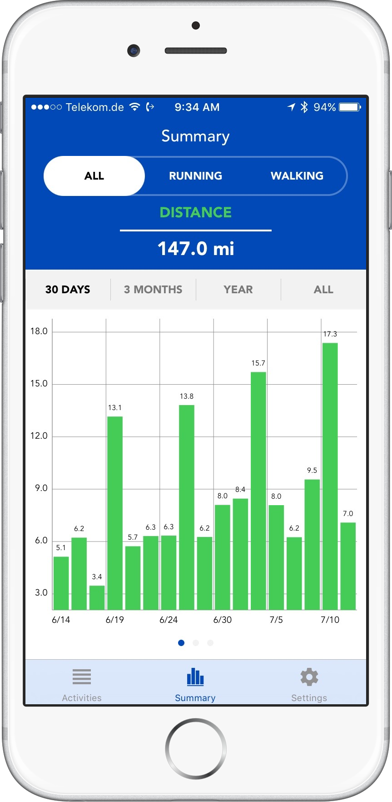
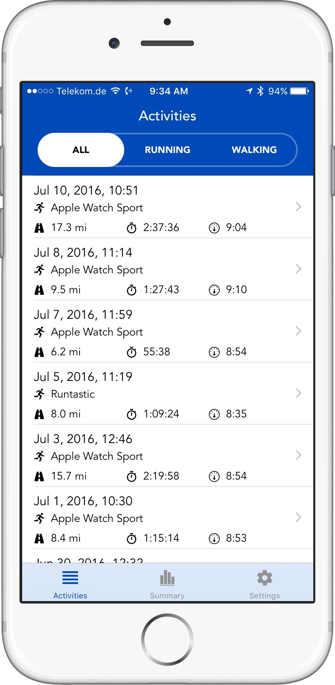
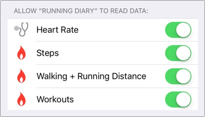

Running Diary
Your activities at your fingertips.
View your running or walking activities on your iPhone, get detailed information of your activity stats and compare your progress over time.



View your running or walking activities on your iPhone, get detailed information of your activity stats and compare your progress over time.
Running Diary cleary lists all your activities, no matter which app you are using for running. It's the perfect solution for runners who use the Apple Watch to track their activities.
See all relevant data of your activity. Duration, pace, cadence, burned energy, steps or heart rate: it's all there at your fingertips. 1
Get a summary of your activities. How far did you get last year? How many hours did you workout last month? How many calories do you burn in a week? Running Diary lets you check your data at a glance.
1 Data availability and quality depends on the tracking device and used app.
Running Diary asks for your permission to read data from the Health app in order to analyze your running and walking activities. You can change or revoke these permissions at any time.
Running diary does neither store health related data on your device nor send health related data to our servers. Running diary does not track your behavior in any way.
Running and walking is fun. Checking your stats is too now. View individual charts 1 of your heart rate, cadence or pace. Check your splits 2 after a race.
1, 2 Data availability and quality depends on the tracking device and used app.